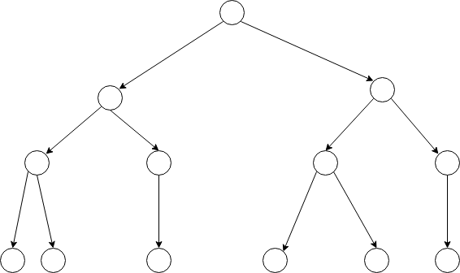
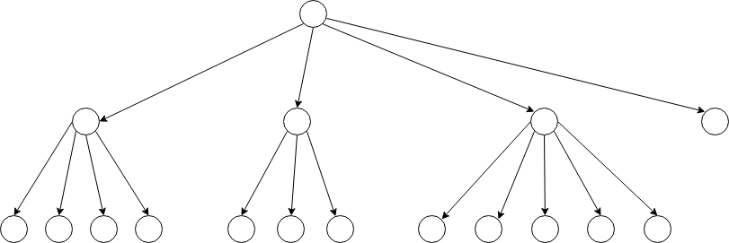
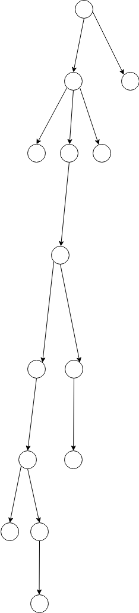
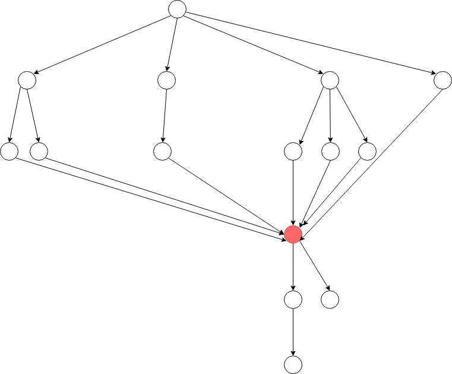
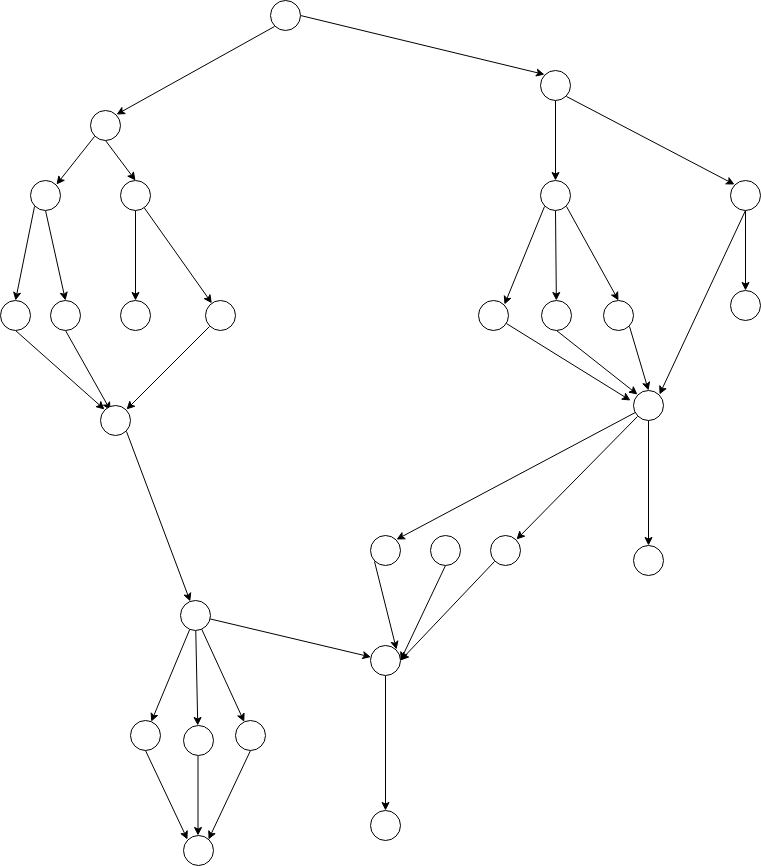
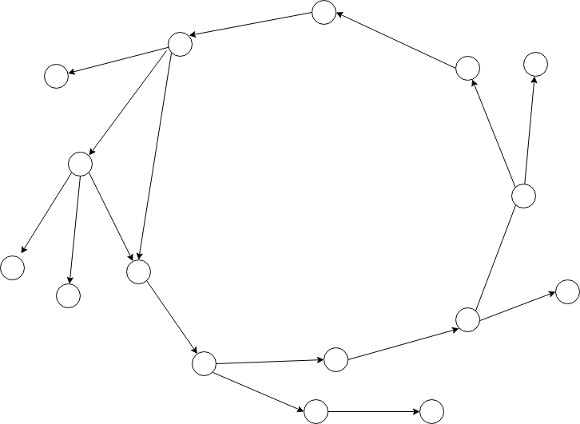

Categorization
The clustering of graphs from their feature matrix looks like below.I have tried to use different algorithms to classify them automatically, but I could not find significant differences between groups when I checked the properties of graphs.
When I look at the image of clustering visualization, it looks like rather the problem of way of vector embedding than clustering algorithms themselves.
Since the X coordinate just represents the index of graph orders, significant values are Y coordinates only.
To fix this problem, I need to try with the array of feature matrixes of each graph, rather than just a feature matrix of whole graphs.

Instead of using computed categorization, I categorized graphs with names that I made up. The names are inspired by graph properties.
Basic(tree)

They are basic directed graphs.
Mostly have tree shapes.
They look clean and straightforward.
Mostly have tree shapes.
They look clean and straightforward.
Broad

They have larger widths.
Short playthrough, Strong replayability.
Short playthrough, Strong replayability.
Long

They have linear shapes.
Easy control of drama. Immersive storytelling through long playtime.
Easy control of drama. Immersive storytelling through long playtime.
Merged

The graphs merge into certain points.
Those points usually represent important events in a story.
Those points usually represent important events in a story.
Clustered

Clustered group of nodes makes a bigger structure.
The groups of nodes could be detailed choices in a scene.
The groups of nodes could be detailed choices in a scene.
Cyclic

End nodes are redirected to early-stage nodes.
Players can find out new status while experiencing similar narratives.
Commonly used for time loops or geo geographic travel.
Players can find out new status while experiencing similar narratives.
Commonly used for time loops or geo geographic travel.
According to the categorization, the dataset is classified by graph properties.
Each class is a group of graphs which have prominent values of graph properties. (degree, average_clustering, cycle_basis, treewidth_min_degree, all_pairs_shortest_path_length)